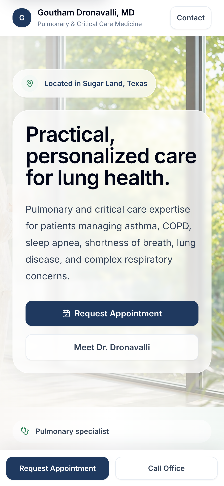

Physician Website Redesign Case Study
If your website undersells your practice, patients may never understand the care you provide.
FrontDoor Health helps independent practices modernize their digital presence so patients can find the practice, understand care, and take measurable next steps.
Measurable business outcomes
A better patient experience also improved online visibility and patient engagement.
Measured with Cloudflare Web Analytics + Google Search Console
5.5×
Estimated monthly patient visits
~40/month before → ~220/month current run rate
+87%
Google referral traffic
Week-over-week increase after launch
810
Google Search impressions
37 Google Search clicks in the first 28 days
Before and After
The difference is visible from the very first screen.
The previous site was informative, but patients had to work to understand the physician, services, and next step. The redesign surfaces what matters most immediately.
Before

- Clinical credentials were not easy enough to find.
- Appointment information did not create a clear next step.
- Patients had to piece together what to expect from the practice.
After

- Specialty care, location, and appointment access are visible immediately.
- Training, experience, and services are easier to understand.
- Patient resources, office details, and FAQs make next steps easier.
The Challenge
The website undersold the practice.
Most patients research a practice online before reaching out. The old website made the care offered harder to understand, and the next step was not obvious enough.
01
Patients needed to understand the practice.
Credentials, expertise, and clinical focus should be easy to discover.
02
Patients needed answers.
Services, conditions treated, and appointment information needed better organization.
03
Patients needed a clear next step.
Scheduling, contact information, and resources should be obvious and easy to find.
The Solution
A practice website built around clarity.
FrontDoor Health redesigned the patient experience around clarity, discoverability, and confidence.
Practice Clarity
The new site makes expertise, care focus, and patient fit easier to understand.
Clear Care Areas
Conditions and services are organized around the questions patients bring with them.
Patient Answers
Resources, office details, and FAQs help patients find important information sooner.
Clear Next Step
Appointment, portal, phone, location, and hours information are easier to find.
The result
The redesign modernized the website and helped more patients discover the practice. Following launch, the practice is seeing an estimated 5.5× increase in monthly patient visits.
Google referrals improved, and the practice can now measure phone calls, emails, appointment requests, and directions—visibility that wasn't possible before.